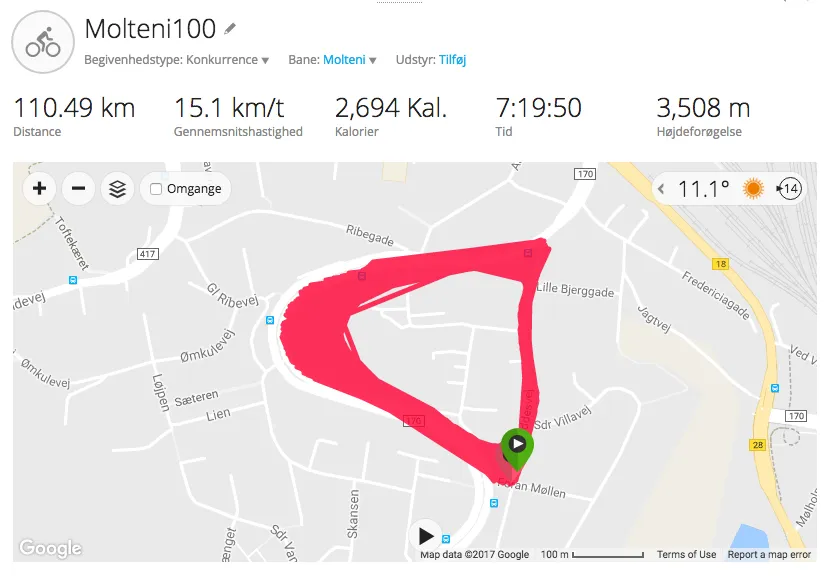

Kongerne af Kiddesvej

Tre ryttere fra Squadra Molteni satte verdensrekord ved at køre 100 gange Kiddesvej.
Ideen var tosset. Det rene galskab, mente nogle endda. Men ikke desto mindre var det vilde projekt “Molteni100”, som Niels Bjørnsteen, Eigil Leegaard og Grane Maaløe kastede sig ud i lørdag morgen 20. maj: En rundstrækning på ca 1,2 km – inkl. den legendariske stigning Kiddesvej på 350 m, gennemsnitlige stigning på 13% – og 19% på det stejleste – blev kørt 100 gange. 
(Foto: Michael Svenningsen, Vejle Amts Folkeblad)


De kom, de kørte – og nu er de Konger af Kiddesvej